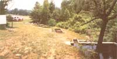
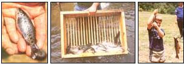
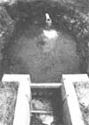

Are you looking for a profitable alternative to conventional agriculture that can be practiced with very little land? Maybe your answer is ...
W hen most people think of farming, visions of fields of corn or pastures dotted With contented cows probably come to mind. And when those same folks talk about agricultural profitability, the conversation likely tends to turn to bushels per acre, tons of silage, and the continual gambles upon rain and frost. However, when MOTHER's own Rick Compton thinks about farming these days (and he's already been the usual route), his mind dwells upon flows in gallons per minute, pH, oxygen content, and conversion ratios. Why? Because since the first of June 1983, Rick's "flock" has consisted of about 1,700 pounds of rainbow trout (Salmo gairdneri kamloops), which he's raised from fingerlings (130 of them to the pound) in four small man-made ponds at MOTHER's EcoVillage Research Center.
In a few weeks, when the processor arrives to pick up those fish that have reached a mature 14 ounces, we'll receive about $ 1.85 per pound for trout that cost only 60c a pound to raise. What's more, other fish will be sold to Eco-Village anglers at the standard area catch-out pond price of $1.85 per pound. Naturally, it wasn't Rick's sole intent to turn a profit (though it looks as if he'll manage it). Rather, he had hoped to demonstrate a type of aquaculture that can provide a tidy supplementary income in a small space ... or, on a larger scale-if you'll pardon the pun-provide an excellent means of making a living!
You might be surprised to know that about 95% of the 11,000,000 pounds of rainbow trout eaten in the United States each year is raised commercially. Since 1900, when fish culture began to be recognized as a viable business, many advances have been made in breeding and growing methods ... in fact, "commercial" trout are now generally acknowledged to be at least equal (in taste and texture) to their wild counterparts. And of course, without aquaculture-in the form of our hatchery system-the meager productivity of natural waters would have resulted in trout's being a rare and expensive delicacy (if not a nearly extinct species) as a consequence of over-fishing.
Trout farming is most popular along a portion of the spring-fed Snake River in Idaho until very recently, 90% of the trout raised in the U.S. came from that spectacular 32-mile-long stretch-but it's now being practiced successfully in Arkansas, northern Georgia, New Jersey, North Carolina, Pennsylvania, Tennessee, and Washington, as well. There are likely other areas where the required clean, cool (but not too cold), and abundant water is available, however. Indeed, once you have a general knowledge of the necessary conditions, you may discover that your area is "ripe" for an experimental fish farm.
Rainbow trout (which are usually preferred for intensive growing over the other varieties) are an amazingly hardy breed, but if you're to have the most productive ponds possible, you'll need to provide your fish with the right environment. Once past the fingerling size, rainbows grow most rapidly when the water temperature stays in the 550 to 580F range. (They can survive down to about 34 or up to around 70', but their enzymatic systems will be upset, and their growth will halt long before those deadly levels are reached.)
Temperature also influences the amount of oxygen that water can hold, so an overly warm pond imposes a double threat. In fact, water at 39°F can hold about 12.9 parts per million (ppm) at saturation, while at 680F it can maintain only 9 ppm. Since rainbows begin to become distressed at oxygen levels of below 6 ppm, and will die at 3 ppm, cooler water provides a much greater margin of safety. Furthermore, in a "stair step" pond system like Rick's, if the oxygen level of liquid entering the course is only 9 ppm, there's a much greater chance that the fish in the upper ponds will use so much oxygen that those in the lower pools will suffocate. This problem can be eased by including aeration devices along the way. For example, Rick installed splashboards made from corrugated fiberglass (with holes drilled in them) at the downstream end of each of our ponds, and made sure that the entry line at the top of each tank was angled up at 45 degrees to create splashing. Finally, altitude is yet another factor that comes into play with oxygen content, since the saturation level of water declines about 0.5 ppm for every 1,000 feet above sea level.
Of course, the ponds used for trout aquaculture must also be kept very clean. Kamloops are sensitive to concentrations of zinc as low as 0.04 ppm, an amount that could result from the use of galvanized piping. For that reason, only plastic or aluminum conduits are used in trout farming. The fish can also be adversely affected by the runoff from any fertilizers or pesticides that might be used by farmers on sites above pond location(s). In general, spring- or well water is considered best-simply because it's much less susceptible to contamination than is a major surface watercourse-but there are cautions to be observed when using liquid from even those relatively pristine sources. Iron bacteria found in the groundwater, for example, can accumulate on the gills of the fish, reducing their ability to breathe.
Hardness and pH are two additional factors that, while both important, can be somewhat at odds with each other. Trout absorb very few minerals through their gills, so the nutritional advantages of hard water are of little benefit to them. Furthermore, water with only a small mineral content has more ability to hold oxygen, so the dissolved oxygen content in soft water is typically greater. Actually, were it not for the lack of pH-buffering capability of mineral-poor water, the low-hardness liquid would always be preferred. However, should a low-pH rain squall (perhaps one that's been acidified by airborne pollution) drain into the stream supplying a pond with soft water, the liquid could become so acidic that the fish would be injured (or killed). Several major kills have, in fact, occurred in the southern Appalachians, and only prompt and thorough liming of the water (to raise the pH level) can ward off the disastrous results of the soft water/low-pH rain combination.
The final environmental prerequisite for successful trout farming is an ample amount of water. Here in western North Carolina, we've found that we can grow about eight pounds of fish for each gallon per minute (GPM) of flow. If we had only one pond, then, we'd be limited to a total of 480 pounds at our minimum flow of 60 GPM. Because we have four tanks linked in series (with oxygen-replenishing spillways in between), however, our total crop could approach 2,000 pounds! As we've already suggested, though, the carrying capacity of a gallon of water depends on temperature, hardness, dissolved oxygen content, and other factors ... so each
region has its own limitations on the number of pounds that can be grown per GPM of flow. (Pennsylvania, for example, can support about four pounds per GPM, while the most successful Idaho ponds have pushed 20 pounds per GPM.) If there's enough flow, however, the total production can still be quite high ... even if the water itself has a low carrying capacity.
MOTHER's trout ponds are supplied by a small, spring-fed tributary stream that feeds into the Eco-Village lake. Rick measured the flow over a weir (a standard flow-measuring device) for a year, combined those figures with less formal observations that he'd made during the four years he's worked at EcoVillage, and decided he'd be safe if he figured on a minimum flow of 60 GPM. (At certain periods of the year, the volume of water is many times that amount, but since he's raising fish that take about a year to mature, it's important that he not run short during the dry months.)
At the point where the creek emerges from the woods, MOTHER's crew built a dam that's approximately five feet tall, forming a pond about 20 feet wide and 30 feet long. A spillway and standpipes allow the excess water to run downstream, while the 60 GPM flow is diverted through a six-inch PVC pipe fitted with a flow restrictor. The pipe runs a little ways downhill (and to the north of the creek bed) before entering a 900-gallon rectangular concrete tank. This uppermost tank is the home for the hatchery-bought fingerlings ... as many as 3,000 of them at a time!
Water leaves the bottom of the first pond, passes over an aerating spillway, and flows downhill a few more feet-in another six-inch PVC pipe-to the second container.
This pond (along with the two below it) was simply excavated from the gradually sloping hillside and lined with gravel to keep silt down. Concrete is used only to form the spillway at the lower end. You see, when the tiny new fish are brought in, it's much easier to "herd" them in a square tank with smooth sides. But as they grow, they can be netted and moved easily enough in a simple earthen pond. Rick says that many people feel that trout grown in a dirt-and-gravel pool taste better, and have flesh of a more pleasant color, though the graveled bottoms are a bit more difficult to keep clean.
The second and third ponds contain 900 gallons each, but the last pool holds approximately 1,100 gallons, and thus is large enough to accommodate the market-sized trout living at the lowest point in the chain. (Incidentally, the larger a Kamloop grows, the more tolerant it is of adverse temperature hygienic, and oxygen conditions.) Finally, from the fourth pond the water returns to the creek, which is dammed up one more time for our catch-out pond.
Rick uses a net and a "grader box" to sort the fish as they grow. Once the trout reach a size that prevents them from slipping through slats in the grader's wooden tray, they're moved down to the next lower pond in the series. Then, when the fish in tank four reach market size, the processor is called in to pick up (and pay for) our crop.
CARE AND FEEDING
The occupants of each pond are fed a 38%protein commercial feed twice a day, if the environmental conditions are right. Should the water become too warm (or the oxygen content drop too low), Rick may feed them only once a day ... or even hold off for a couple of days. He says that feeding has been one of the trickiest aspects of the business to get the hang of, since the correct amount and frequency can be learned only by experience.
The size of the pellets that the trout receive is different for each pond. Because we have only four pools, four feed sizes serve us well, but larger, commercial operations often use a series of six or more. Careful adjustment of the diameter of the rations to the size of the fish causes the finny crop to grow more rapidly, and reduces waste.
We're paying about 22c per pound for the Silver Cup fish feed Rick uses, and we get back about a pound of trout for every two pounds of food. This two-to-one proportion is called the conversion ratio, and any figure lower than 2:1 is considered to be pretty darned good. The best big-time operations approach 1.5:1, and 1.13:1 has been achieved in a laboratory. (Obviously, a 1: 1 ratio would imply complete conversion of food to trout, which is impossible.) Of course, large fish farms (they may have as many as ten acres of ponds) don't feed by hand. Instead, they use automatic feeders that the fish themselves can set off ... allowing the trout to take in as much as they wish.
One of the interesting business aspects of trout farming is that the fish can go with very little food (for up to two weeks at a time) without losing a significant amount of weight. Thus, a grower can afford to wait two weeks for the processor to arrive without having to waste feed on the already market-sized fish. With most other livestock, rations must be maintained usually at no gain in potential income-simply to keep a critter at market weight.
AILMENTS
As is the case with any intensively grown livestock, rainbow trout are susceptible to diseases. So far we've been lucky, but Rick has had to keep a watchful eye out for a couple of problems. One, called "red mouth" because of its major symptom, can bring about losses of more than 30% if unchecked. The illness is usually picked up at the hatchery, so it pays to keep different batches of fingerlings separated in order to prevent healthy fish from contracting the disease. Fortunately, red mouth can be treated by mixing a small dose of Tetramycin in with the feed. (Commercially prepared mixtures with 0.5 to 1.5 pounds of the antibiotic added to each 100 pounds of feed are available, at an additional cost of $1.50 to $2.00 per bag.)
The other common ailment in our area is bacteria gill, which ?again ?is often introduced to farming operations by hatchery stock (it's particularly prevalent in those hatcheries using hard well water). Amazingly enough, the general cure for bacteria gill is to give the fish a salt bath! If the trout are left in a 30% salt solution for about 30 minutes, they'll come out with clean gills. (This may sound like a strange treatment for freshwater fish, but bear in mind that trout are Salmonids, and many of them are anadromous ... that is, they migrate between fresh- and salt water.)
Each day, Rick checks for dead fish and for any that are discolored or have bulging red eyes. With each mortality (they average about one per week, usually from a condition called egg lock), he tries to determine what killed the fish. Should three or more trout die in one week, he'd become concerned and might take a sample to a biologist to determine the cause.
Other daily chores include testing the water for temperature, pH, oxygen content, hardness, and occasionally for dissolved carbon dioxide. Rick uses a Hach Company AL-36B kit to perform these examinations. Observation is also an important part of tending the "flock". Contented fish generally swim in a circle that faces them directly into the flow of water during a portion of their orbit, and if the trout are swimming about erratically, it's a sure sign that they're agitated. Furthermore, about once a month the algae have to be cleaned from the concrete pond walls and bottoms and from the spillways. (So far, at least, the spillways have shown the most accumulation.)
The construction of the four ponds cost just short of $1,700, and we added a shed (for another $400) to house food bags, nets, etc. If the farm can continue to produce 1,600 or more pounds of rainbows per year, the operation should produce an annual cash flow of at least $1,760, and possibly as much as $2,960. Operating expenses at that volume should be around $1,000, so the net profit ought to pay back the construction cost in no more than two and a half years. From then on, a miniature fish farm like ours could be expected to produce a tidy supplementary income ... not to mention a mighty tasty meal from time to time!
|
 CLOCKWISE FROM TOP: A view from above the top collection pond at MOTHER's fish farm. The fingerling tank is the rectangular one.... A grader box fitted with dowels spaced a particular distance apart is used to separate the fish by their size.... A young visitor to the Eco-Village reaps the rewards of the catch-out pond at the bottom of our fish farm.... This Kamloops has lived at Eco- Village for only a few weeks, and will require almost a year's worth of feeding before it's ready for the market. |
 |
|
|
 |
|
|